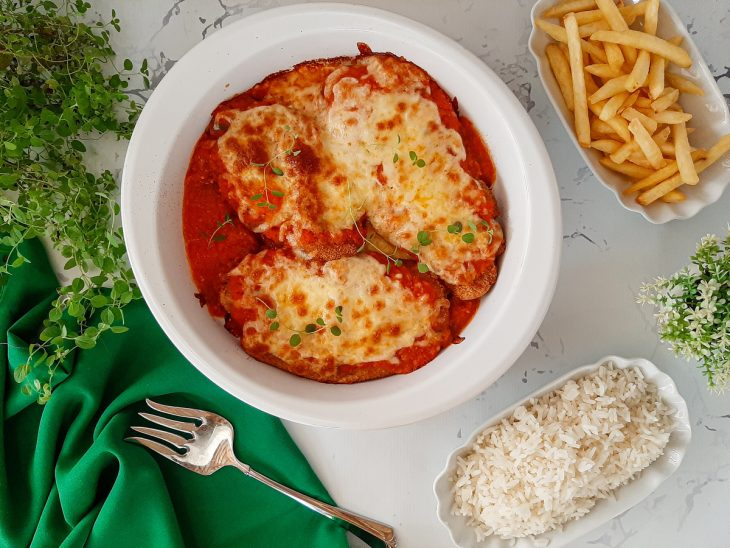

Cheese bread

Chicken parmesan i love this dish and certainly you will to s2.
ingredients
- 2 large, skinless chicken breasts, halved through the middle/li>
- 2 eggs, beaten
- 75g breadcrumb
- 175g parmesan, grated
- 1 tbsp olive oil
- 2 garlic cloves, crushed
- half a 690ml jar passata
- 1 tsp caster sugar
- 1 tsp dried oregano
- half a 125g ball light mozzarella, torn
how to made
- Halve 2 large skinless chicken breasts through the middle then place the 4 pieces between cling film sheets and bash out with a rolling pin until they are the thickness of a £1 coin.
- Dip the chicken pieces in 2 beaten eggs, then coat them with a mixture of 75g breadcrumbs and half of the 75g grated parmesan. Set aside on a plate in the fridge while you prepare the sauce.
- Heat 1 tbsp olive oil in a pan and cook 2 crushed garlic cloves for 1 min, then add half a 690ml jar of passata, 1 tsp caster sugar, and 1 tsp dried oregano. Season and simmer for 5-10 mins.
- Heat the grill to High and cook the chicken for 5 mins each side, then remove.
- Pour the tomato sauce into a shallow ovenproof dish and top with the chicken.
- Scatter over torn pieces of half a 125g ball light mozzarella, and the remaining grated parmesan, then grill for 3-4 mins until the cheese has melted and the sauce is bubbling.
- Serve with vegetables or salad and some pasta or potatoes, if you like.
Home page